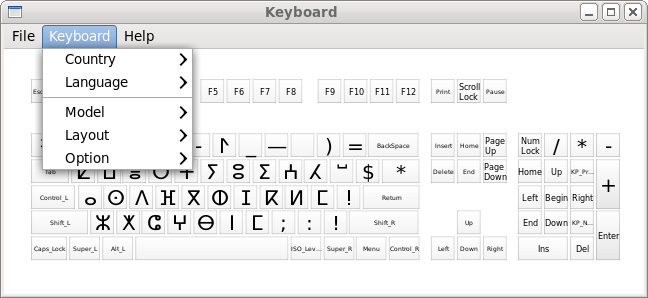

eekboard is a virtual keyboard software package which ships with a standalone virtual keyboard application (eekboard), and a library to create keyboard-like UI (libeek).

You can also clone the project with Git by running:
$ git clone git://github.com/ueno/eekboard
$ ./configure $ make $ sudo make install $ eekboardSome version combinations of Clutter and Clutter-Gtk do not cooperate well. If you get something strange, try "EEKBOARD_DISABLE_CLUTTER=1 eekboard".
Copyright (C) 2006 Sergey V. Udaltsov
Copyright (C) 2010 Daiki Ueno
Copyright (C) 2010 Red Hat, Inc.
eekboard is written by Daiki Ueno (ueno at unixuser.org)
Cairo keyboard drawing functions are borrowed from the libgnomekbd
library by Sergey V. Udaltsov (svu at gnome.org). See comments in
eek/eek-drawing.c for detail.